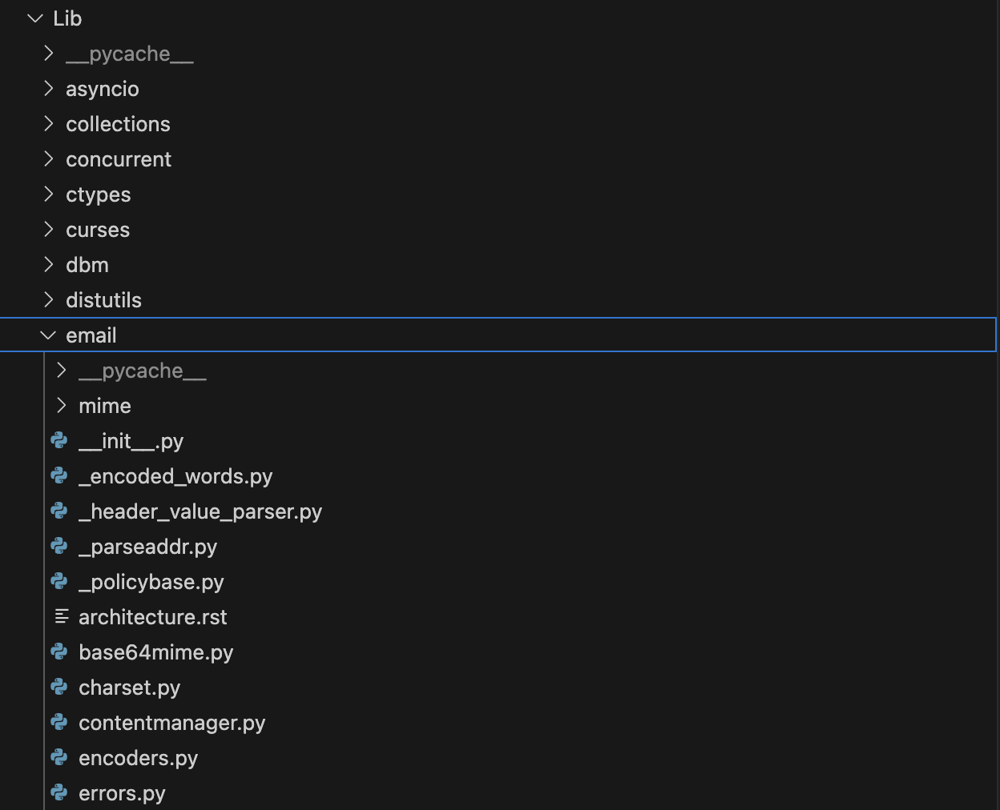

12. 표준 라이브러리#
CPython 표준 라이브러리 모듈은 두 가지 종류로 나뉜다.
유틸리티를 제공하는 순수한 파이썬 모듈
C로 작성됐고 파이썬 래퍼를 제공하는 모듈
12.1 파이썬 모듈#
순수한 파이썬 모듈들은 Lib 디렉토리에 위치한다.
아래의 email 모듈과 같은 큰 모듈 중 일부는 하위 모듈이 있는 경우도 있다.

파이썬 배포판을 설치하면 표준 라이브러리 모듈은 배포판 폴더로 복사된다. 해당 폴더는 파이썬을 시작할 때 항상 경로에 포함되어 모듈을 임포트할 때 모듈 위치를 신경 쓰지 않아도 된다.
→ sys.path에 포함된다.
아래는 파이썬 모듈 중 하나인 colorsys의 함수이다.
def rgb_to_hls(r, g, b):
maxc = max(r, g, b)
minc = min(r, g, b)
# XXX Can optimize (maxc+minc) and (maxc-minc)
l = (minc+maxc)/2.0
if minc == maxc:
return 0.0, l, 0.0
if l <= 0.5:
s = (maxc-minc) / (maxc+minc)
else:
s = (maxc-minc) / (2.0-maxc-minc)
rc = (maxc-r) / (maxc-minc)
gc = (maxc-g) / (maxc-minc)
bc = (maxc-b) / (maxc-minc)
if r == maxc:
h = bc-gc
elif g == maxc:
h = 2.0+rc-bc
else:
h = 4.0+gc-rc
h = (h/6.0) % 1.0
return h, l, s
위 함수를 사용하는 방법은 아래와 같다.
import colorsys
colorsys.rgb_to_hls(255, 0, 0)
모듈의 위치를 신경 쓰지 않고 바로 임포트할 수 있다.
모든 파이썬 모듈은 위 함수와 같이 단순한 파이썬 코드로 이루어져 있으며 이해하기 어렵지 않다. 따라서 표준 라이브러리 코드에서 버그나 개선 사항을 찾아 파이썬 배포판에 기여할 수도 있다.
12.2 파이썬과 C가 혼용된 모듈#
순수한 파이썬 모듈을 제외한 나머지 모듈은 모두 C로 작성됐거나 C와 파이썬이 혼용되어 있다.
C로 작성된 부분은 Modules 디렉토리에 위치하며 파이썬으로 작성된 부분은 Lib 디렉토리에 위치한다.
아래 사항은 예외이다.
sys모듈은Python/sysmodule.c에 위치한다.CPython의 내부와 강하게 연관되어 있기 때문에
Python디렉토리에 존재한다.
__builtins__모듈은Python/bltinmodule.c에 위치한다.인터프리터를 인스턴스화할 때 내장 함수들을 __builtins__로부터 임포트하므로
Python디렉토리에 존재한다.print(),chr(),format()과 같은 모든 내장 함수를 해당 파일에서 찾을 수 있다.
C로 작성된 일부 모듈의 내용은 운영 체제 기능을 외부에 노출한다. 따라서 운영 체제에 따라 모듈이 다르게 동작하는 특수한 케이스가 존재한다.
예를 들어 time 모듈은 윈도우가 시간을 유지하고 저장하는 방법이 리눅스, macOS와 전혀 다르기 때문에 운영 체제별로 시간 함수의 정확도가 다르다.
스레딩 모듈, 파일 시스템 모듈, 네트워킹 모듈도 동일한 API를 운영 체제별로 여러 번 구현한다.
운영 체제별로 동작이 다르기 때문에 CPython 소스 코드는 최대한 같은 방식으로 동작을 구현한 다음 일관성 있고 추상화된 API만 제공한다.
이러한 구현 방식을 time 모듈에서도 확인할 수 있다.
아래는 time 모듈의 함수로 프로세스의 CPU 사용 시간을 나노초 단위로 반환하는 함수이다.
static PyObject *
time_process_time_ns(PyObject *self, PyObject *unused)
{
_PyTime_t t;
if (_PyTime_GetProcessTimeWithInfo(&t, NULL) < 0) {
return NULL;
}
return _PyTime_AsNanosecondsObject(t);
}
아래 함수는 time_process_time_ns()에서 호출하는 함수로 운영 체제에 따라 다른 방식으로 시스템 프로세스 시간을 가져오는 기능을 수행한다.
static int
_PyTime_GetProcessTimeWithInfo(_PyTime_t *tp, _Py_clock_info_t *info)
{
#if defined(MS_WINDOWS)
HANDLE process;
FILETIME creation_time, exit_time, kernel_time, user_time;
...
t = _PyTime_FromNanoseconds((ktime + utime) * 100);
*tp = t;
return 0;
#else
/* clock_gettime */
#if defined(HAVE_CLOCK_GETTIME) \
&& (defined(CLOCK_PROCESS_CPUTIME_ID) || defined(CLOCK_PROF))
struct timespec ts;
...
/* clock */
/* Currently, Python 3 requires clock() to build: see issue #22624 */
return _PyTime_GetClockWithInfo(tp, info);
#endif
}